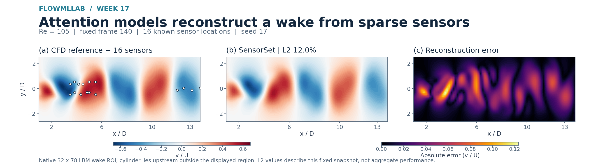

Build a trustworthy first result
Basic fluid mechanics and algebra are enough to begin. Learn Python arrays and plotting, then validate the cavity solver against an independent reference.
Open the first Python labLearn scientific machine learning through fluid-mechanics experiments. Compare numerical solutions, neural predictions and physical benchmarks—then open the notebook and try it yourself.
The framework and its applications are described in the FlowMLLab paper in AI Thermal Fluids.
MIE 690A: AI in Fluid Mechanics · Developed by Ehsan Roohi

See how vortices and wall layers change with Reynolds number. Compare the CFD solution with a frozen POD-DeepONet, then check both against Ghia’s tabulated centreline values.
Square, two-dimensional incompressible cavity; upper wall moves right, other walls are stationary. Re = UlidL/ν. Fields use 512 × 512 cells; all displayed coordinates are divided by L.
Loading verified cavity fields…
CFD POD-DeepONet
Every Reynolds number uses the same colour limits for a given quantity, and both methods share spatial bounds. Speed uses a linear scale. Pressure uses a symmetric-log scale, linear within ±0.02; vorticity is linear within ±1. Both retain the full extrema. Signed differences use a separate symmetric linear scale shared across all seven cases.
Pressure is recovered from steady momentum gradients with a separate zero-mean gauge for each interior field. It is not an independently validated pressure solution. Vorticity uses the same centred velocity derivatives for both methods. Pressure and vorticity are shown only at the 511 × 511 interior nodes, without extrapolated wall values.
The frozen network is the mean of three hybrid_2 POD-DeepONet fits (seeds 7, 23, 61). Training Re: 100, 250, 500, 750, 1,000, 2,500, 4,000, 5,000, 6,000, 9,000 and 10,000. Validation Re: 400 and 6,500. Held-out tests: 3,200 and 7,500. Ghia points were not used in fitting. Switching cases displays saved results; it does not train a network or solve CFD.
This finite-grid steady two-dimensional reference does not establish mesh independence or physical stability at high Re. Inspect mesh and time sensitivity and model evaluation and residuals.
CFD POD-DeepONet○ Ghia et al. (1982)× Flagged printed value
Download these profiles (CSV)Data definitions & source hashesGhia reference
Compare Re = 100 and 7,500. Where do the secondary vortices grow? Zoom into a lower corner, then switch to the signed difference. Does a small velocity error also guarantee a small vorticity error?
CFD & Ghia notebook ↗ POD-DeepONet notebook ↗Basic fluid mechanics and algebra are enough to begin. Learn Python arrays and plotting, then validate the cavity solver against an independent reference.
Open the first Python labStart with NumPy and Matplotlib skills. Work through cavity validation and Weeks 2–4 before the guided-project evidence chain.
Start cavity validationChoose a workshop, the six-week core or a focused extension. Inspect setup, data provenance and evaluation limits before planning class or compute time.
Plan a course or workshopP0 is the approximately 20-minute project evidence chain after Week 4. It is not the first lab for a complete beginner. Read setup and prerequisites.
Inspect retained fields, plots and checkpoints, or recompute their metrics. This is usually the lightest CPU path. Replaying a saved prediction is not new training or new CFD.
Execute a compact solver, baseline or small model fit. Follow the unit's environment and data guide. Many labs use CPU; optional software varies by unit.
Rebuild datasets, sweeps or research-scale results only with the stated budget and tools. CUDA closure training and fresh Gmsh/SU2 CFD have separate requirements.
A launch link does not certify a fresh Colab Run All. Week 14 has a separate environment; Week 15 needs the linked evidence archive; interactive Colab acceptance and a representative student-workload pilot remain open for Weeks 17–22.
The numbered catalog includes the core, extensions and incremental units. Prerequisites matter more than the number: select a manageable route rather than treating all 22 units as a measured semester workload.
No matching units. Try a broader topic or clear the search.
CPU teaching exercises and retained evidence; full regeneration is separate.
Before this unit: Basic algebra and fluid-mechanics concepts; no Python required for the first lab.
Compute planning estimate: 10–40 min per lab; classroom work longer. Not a timing measurement of this revision; study and discussion take longer.
Colab link is an entry point, not a guarantee of a fresh hosted Run All.
CPU teaching exercises and retained evidence; full regeneration is separate.
Before this unit: Week 1 Python and cavity diagnostics; derivatives and array indexing.
Compute planning estimate: Under 1 min for the numerical audit. Not a timing measurement of this revision; study and discussion take longer.
Colab link is an entry point, not a guarantee of a fresh hosted Run All.
CPU teaching exercises and retained evidence; full regeneration is separate.
Before this unit: Week 1 cavity validation; continuity, momentum and finite differences.
Compute planning estimate: Not measured for this revision; inspect the setup before a full solve. Not a timing measurement of this revision; study and discussion take longer.
Colab link is an entry point, not a guarantee of a fresh hosted Run All.
Cavity startup movies: physical time and numerical sensitivity
CPU teaching lab with generated analytic data.
Before this unit: Week 1 Notebook 02 TensorFlow/Keras and Week 2 scaling, train/validation/test splits and baselines; then the matched optimizer experiments.
Compute planning estimate: See the notebook run settings and timings. Not a timing measurement of this revision; study and discussion take longer.
Runs locally on CPU with TensorFlow and SciPy. The Colab link is an entry point.
Standalone CPU notebook with transparent NumPy/SciPy algorithms; no external CFD dependency.
Before this unit: Week 1 cavity foundations and Week 1.2 pressure-velocity coupling; Week 1.3 optimizers is not required.
Compute planning estimate: Default scalar experiments plus six actual Re=100/400 cavity solves and plots take a few minutes in the retained local CPU run; study and refinement take longer. Not a timing measurement of this revision; study and discussion take longer.
Fresh local Restart/Run All includes actual cavity CFD and Ghia comparisons; nine numerical tests passed. Hosted Colab execution not claimed.
CPU teaching exercises and retained evidence; full regeneration is separate.
Before this unit: Week 1 NumPy, plotting and numerical-validation ideas.
Compute planning estimate: 20–45 min. Not a timing measurement of this revision; study and discussion take longer.
Colab link is an entry point, not a guarantee of a fresh hosted Run All.
CPU teaching exercises and retained evidence; full regeneration is separate.
Before this unit: Week 2 scaling, regression and development/evaluation splits; elementary probability. Take scalar sections first; POD–GP fields require Week 4 POD.
Compute planning estimate: Under 1 min for retained-evidence path. Not a timing measurement of this revision; study and discussion take longer.
Colab link is an entry point, not a guarantee of a fresh hosted Run All.
CPU teaching exercises and retained evidence; full regeneration is separate.
Before this unit: Week 1 Python; molecular velocities, probability and conservation laws.
Compute planning estimate: 20–40 min Maxwellian; 30–120 min mini-DSMC. Not a timing measurement of this revision; study and discussion take longer.
Colab link is an entry point, not a guarantee of a fresh hosted Run All.
Nine mapped labs: fresh CPU CFD/learning exercises and explicitly separated retained research evidence.
Before this unit: Week 1 cavity validation and Week 2 supervised learning. Labs 1–3 precede high-Re Labs 5/7/8; advanced Lab 9 follows Week 13 Part A PINNs.
Compute planning estimate: 20–90 min per lab; training settings matter. Not a timing measurement of this revision; study and discussion take longer.
Colab link is an entry point, not a guarantee of a fresh hosted Run All.
Label-free Ghia PINN audit: failed cases and physical checks
CPU teaching exercises and retained evidence; full regeneration is separate.
Before this unit: Week 4 cavity data; matrix algebra, SVD and time integration.
Compute planning estimate: Under 5 min retained-evidence path; fresh validation about 1 min. Not a timing measurement of this revision; study and discussion take longer.
Colab link is an entry point, not a guarantee of a fresh hosted Run All.
CPU teaching exercises and retained evidence; full regeneration is separate.
Before this unit: Week 4 field surrogates; Stokes/Navier–Stokes equations and POD.
Compute planning estimate: Under 5 min retained-evidence path; full training not included. Not a timing measurement of this revision; study and discussion take longer.
Colab link is an entry point, not a guarantee of a fresh hosted Run All.
CPU teaching exercises and retained evidence; full regeneration is separate.
Before this unit: Weeks 1–4; freeze a baseline, split, metric and failure threshold before P0.
Compute planning estimate: P0 about 20 min after Week 4; tracks 1–4 about 1–4 h including sweeps. Not a timing measurement of this revision; study and discussion take longer.
Colab link is an entry point, not a guarantee of a fresh hosted Run All.
CPU/evidence paths; optional P6 requires CUDA.
Before this unit: Week 5 project protocol; earlier tracks before the optional CUDA closure track.
Compute planning estimate: Several hours for stochastic tracks; full CUDA closure study not estimated. Not a timing measurement of this revision; study and discussion take longer.
Colab link is an entry point, not a guarantee of a fresh hosted Run All.
CPU teaching exercises and retained evidence; full regeneration is separate.
Before this unit: Weeks 1–4; unsteady flow, numerical stability and supervised field learning.
Compute planning estimate: Under 2 min retained-evidence path; full three-grid CFD excluded. Not a timing measurement of this revision; study and discussion take longer.
Colab link is an entry point, not a guarantee of a fresh hosted Run All.
CPU teaching exercises and retained evidence; full regeneration is separate.
Before this unit: Weeks 2–4; rarefaction/DSMC concepts from Week 3 and case-wise testing.
Compute planning estimate: Under 2 min teaching path. Not a timing measurement of this revision; study and discussion take longer.
Colab link is an entry point, not a guarantee of a fresh hosted Run All.
CPU teaching exercises and retained evidence; full regeneration is separate.
Before this unit: Week 7 wakes; POD, linear algebra and Gaussian uncertainty (Week 2.1 helpful).
Compute planning estimate: A few minutes for the validation grid. Not a timing measurement of this revision; study and discussion take longer.
Colab link is an entry point, not a guarantee of a fresh hosted Run All.
CPU teaching exercises and retained evidence; full regeneration is separate.
Before this unit: Week 7 wake dynamics, Week 7.2 sparse sensing and the patches/Q-K-V attention primer in this unit guide; full Weeks 17–22 are later extensions.
Compute planning estimate: About 10 min on two cores; QUICK about 3 min. Not a timing measurement of this revision; study and discussion take longer.
Colab link is an entry point, not a guarantee of a fresh hosted Run All.
CPU teaching exercises and retained evidence; full regeneration is separate.
Before this unit: Week 7.3 masked pretraining; target-label budgets and matched POD baselines.
Compute planning estimate: Seconds to read retained evidence; full regeneration not estimated. Not a timing measurement of this revision; study and discussion take longer.
Colab link is an entry point, not a guarantee of a fresh hosted Run All.
CPU teaching exercises and retained evidence; full regeneration is separate.
Before this unit: Mach number, perfect-gas relations and Week 2 validation/splits.
Compute planning estimate: Under 7 min for two evidence-based labs; full model generation excluded. Not a timing measurement of this revision; study and discussion take longer.
Colab link is an entry point, not a guarantee of a fresh hosted Run All.
CPU teaching exercises and retained evidence; full regeneration is separate.
Before this unit: Weeks 3–4 rarefaction and branch/trunk operators; Week 8 gas-dynamics branches.
Compute planning estimate: About 6–8 min for Labs 1–2; Lab 3 under 2 min. Not a timing measurement of this revision; study and discussion take longer.
Colab link is an entry point, not a guarantee of a fresh hosted Run All.
CPU teaching exercises and retained evidence; full regeneration is separate.
Before this unit: Week 3 DSMC and Week 4 surrogate validation; distinguish source and teaching models.
Compute planning estimate: Under 2 min retained-data path. Not a timing measurement of this revision; study and discussion take longer.
Colab link is an entry point, not a guarantee of a fresh hosted Run All.
CPU teaching exercises and retained evidence; full regeneration is separate.
Before this unit: Week 3 molecular collisions; numerical quadrature and Week 2 regression.
Compute planning estimate: Plan for roughly 20–30 min on CPU; hardware-dependent. Not a timing measurement of this revision; study and discussion take longer.
Colab link is an entry point, not a guarantee of a fresh hosted Run All.
Fresh CPU moments, random-start BGK PINN training and independent DVM, plus retained research audits.
Before this unit: Weeks 2, 3, 8 and 10: data roles, Maxwellians and moments, shock jumps and profile validation. The PINN introduction is self-contained.
Compute planning estimate: One bounded training run by default; the seven-model sweep is optional. See the measured execution receipt. Not a timing measurement of this revision; study and discussion take longer.
All code cells executed in a fresh local CPU kernel. Colab bootstrap is supplied; a hosted Colab Run All has not been claimed.
CPU teaching exercises and retained evidence; full regeneration is separate.
Before this unit: Week 7 velocity fields; spatial derivatives, classification and validation splits.
Compute planning estimate: 5–15 min per lab. Not a timing measurement of this revision; study and discussion take longer.
Colab link is an entry point, not a guarantee of a fresh hosted Run All.
CPU teaching exercises and retained evidence; full regeneration is separate.
Before this unit: Weeks 3 and 10 DSMC sampling; Week 11 noisy derivatives helpful.
Compute planning estimate: About 2 min including compact training. Not a timing measurement of this revision; study and discussion take longer.
Colab link is an entry point, not a guarantee of a fresh hosted Run All.
CPU teaching exercises and retained evidence; full regeneration is separate.
Before this unit: Weeks 1–2 and 4: cavity equations, optimization and held-out validation; PINN foundations reading.
Compute planning estimate: About 3 min compact CPU lab; A100 research runs excluded. Not a timing measurement of this revision; study and discussion take longer.
Colab link is an entry point, not a guarantee of a fresh hosted Run All.
Matched D/W=5 optimizer study and attributed research source
CPU teaching exercises and retained evidence; full regeneration is separate.
Before this unit: Week 13 PINNs; RANS equations and turbulence closures; use the separate setup.
Compute planning estimate: 5–10 min notebook; optional upstream solver runs take hours. Not a timing measurement of this revision; study and discussion take longer.
Separate environment; hosted Run All not verified.
Train a compact geometry-conditioned POD operator on CPU; compare exact manufactured fields and inspect retained CFD research evidence.
Before this unit: Week 4 field surrogates and POD; training/validation/test splits. Start with the CPU lesson before the optional full research archive.
Compute planning estimate: Bounded classroom fit; hardware-dependent. Full research archive and training campaign are separate. Not a timing measurement of this revision; study and discussion take longer.
Checkout/bootstrap supports the CPU lesson and bundled research figures; the full research audit needs its documented external archive. Hosted Colab acceptance is not yet claimed.
Data-based laptop notebook; Gmsh/SU2 only for new CFD.
Before this unit: Week 8 compressible flow and Week 15 geometry validation; CFD tools only for regeneration.
Compute planning estimate: Not measured for this revision; CFD campaign time excluded. Not a timing measurement of this revision; study and discussion take longer.
Colab link is an entry point, not a guarantee of a fresh hosted Run All.
CPU worked examples, exercises and evidence rescoring; fresh full-protocol fitting is separate.
Before this unit: Weeks 7.3, 7.4 and 15; matrix products, derivatives, POD and development/evaluation roles.
Compute planning estimate: Not measured for this revision. Not a timing measurement of this revision; study and discussion take longer.
Local/ZIP setup documented; interactive Colab and representative student-workload acceptance remain open.
CPU worked examples, exercises and evidence rescoring; fresh full-protocol fitting is separate.
Before this unit: Week 17 Q/K/V and tensor shapes; likelihood, cross-entropy and causal masks.
Compute planning estimate: Not measured for this revision. Not a timing measurement of this revision; study and discussion take longer.
Local/ZIP setup documented; interactive Colab and representative student-workload acceptance remain open.
CPU worked examples, exercises and evidence rescoring; fresh full-protocol fitting is separate.
Before this unit: Weeks 17–18; POD/SVD and least squares; Week 7.2 sensing helpful.
Compute planning estimate: Not measured for this revision. Not a timing measurement of this revision; study and discussion take longer.
Local/ZIP setup documented; interactive Colab and representative student-workload acceptance remain open.
CPU worked examples, exercises and evidence rescoring; fresh full-protocol fitting is separate.
Before this unit: Week 19 sensor/patch contracts; validation-only selection and uncertainty.
Compute planning estimate: Not measured for this revision. Not a timing measurement of this revision; study and discussion take longer.
Local/ZIP setup documented; interactive Colab and representative student-workload acceptance remain open.
CPU worked examples, exercises and evidence rescoring; fresh full-protocol fitting is separate.
Before this unit: Weeks 17–20; Week 7 autonomous wakes and DMD/POD forecasting.
Compute planning estimate: Not measured for this revision. Not a timing measurement of this revision; study and discussion take longer.
Local/ZIP setup documented; interactive Colab and representative student-workload acceptance remain open.
CPU worked examples, exercises and evidence rescoring; fresh full-protocol fitting is separate.
Before this unit: Week 21 rollouts; Weeks 7.3–7.4 transfer, label accounting and matched budgets.
Compute planning estimate: Not measured for this revision. Not a timing measurement of this revision; study and discussion take longer.
Local/ZIP setup documented; interactive Colab and representative student-workload acceptance remain open.
Compute estimates come from course guides and are not timing measurements of this documentation revision. Reading, derivations, coding and interpretation add study time.
Optional self-study supplements are listed separately. The geometry–time bridge follows Weeks 15 and 21 and uses manufactured arrays; it is not a replacement for the numbered sequence.
Compare six enlarged geometry-aware models against retained CFD, then separate whole-field accuracy from reverse-flow topology. In the three completed matched controls, enlargement reduced mean velocity error by 18.82% for geometry-aware DeepONet and 12.16% for Geom-DeepONet; SMART's error increased by 7.26%. Each configuration has one training seed.


Learn to calculate capacity effects, inspect vortex-location tradeoffs, audit evidence and choose a bounded next experiment. The record includes model specifications and weight availability. New trained weights and full prediction arrays are currently unavailable; this is an analysis of retained figures and recorded summaries.
Read the study and exercisesOpen the analysis notebookInspect configurations and evidence
Compare the CFD reference, the retained SensorSet reconstruction and spatial error. These are saved teaching results with declared data roles, not a live inference service.

Explore the attention lessonRun the cavity evidence explorer locally
The article-linked DSMC cases originate in earlier research by Ehsan Roohi and collaborators. FlowMLLab brings selected data into a teaching setting; its new loaders, baselines and classroom models are distinct from the original research solvers and published neural models.
Selected executed HTML previews and research-evidence guides are listed below. Their saved outputs are reading material, not proof of a fresh execution in your environment.
Week 13 now includes the retained Re=1000, D/W=2.2 field (checkpoint 55118) and a separately labelled continuation loss history through checkpoint 65711. They are not matched-checkpoint CFD validation.
Retained results are evidence, not notebook scratch space. Executing a teaching example does not by itself reproduce a paper's accuracy.
Current course version v1.15.0 · Weeks 1–22
66 student notebooks, including 1 historical companion · 39 active lecture PDFs · 807 pages. Optional supplements are separate.
The site is built automatically from this repository. Current release and source code · All-versions Zenodo archive · Site build record.
The historical v1.4.0 and v1.4.1 archives retain their original DOI records. Earlier release descriptions are historical scope statements, not current file counts.
Nozzle symmetry/export defects remain unresolved in the source data. The cylinder teaching dataset is CC BY 4.0 with Ehsan Roohi's authorization; see its data license. Licensing alone does not establish scientific readiness for external benchmark adoption.
Week 16 NASA reference convergence and physical checks remain a deferred extension. Weeks 17–22 use inspected wake trajectories; they do not establish foundation-model, independent-blind or grid-independent performance. See the data-role and execution contract.